打造你的 AI Agent：用 Hermes Desktop + OpenRouter¶
2026 年 6 月 16 日 · 王伯雅 · 連大成 · 人文AI共智未來實驗室 CHAI
為什麼要學這個？¶
一般 LLM 和 AI Agent 有什麼不同？¶
你大概用過 ChatGPT、Claude 或 Gemini。它們很會回答問題、寫文章、翻譯，但能做的也就到「跟你對話」為止：你問，它答，真正要動手的事還是得自己來。
AI Agent 的不同不在於它「會不會」某件事，而在於它會不會自己去做。它能把任務拆成幾步、自己決定要用哪些工具，再看結果決定下一步。下面這張表把兩者的差別整理出來：
| 能力 | 一般 LLM | AI Agent |
|---|---|---|
| 回答問題 | 主要用途，依輸入生成文字 | 也能回答，但通常只是過程的一環 |
| 規劃與多步驟執行 | 可以幫忙拆解，但每一步多半要你下指令 | 自己排好步驟、依中間結果調整，一路做到完成 |
| 使用工具 | 流程多半固定，工具由開發者事先接好 | 視任務需要自己選工具，例如搜尋、查資料庫、呼叫 API |
| 執行程式碼、操作檔案 | 通常只能在平台的沙盒裡 | 可以直接在你的電腦或伺服器上跑指令、讀寫檔案 |
| 記憶與上下文 | 靠當下的對話，必要時搭配記憶或 RAG | 會記錄任務進度與中間結果，後面的步驟再拿來用 |
| 串接其他平台 | 多半侷限在平台本身 | 可以接 Telegram、Discord、Slack，收發訊息或觸發流程 |
舉個例子：你要跑一個很久的實驗或備份，又不想守在電腦前。這時你掏出手機，傳一句話給你的 Bot：「開始備份桌面資料夾」或「執行這個分析程式」。Bot 就在你的電腦上動起來，你去吃飯、去上課，回來大概就跑完了。它不是教你怎麼做，而是替你把事情做完。
為什麼選 Hermes Agent？¶
Hermes Agent 是 Nous Research 開發的開源框架，拿來上手有幾個好處：
- 開源、採 MIT 授權，可以自由使用、修改，也能商用，適合教學或改成自己的版本。
- 不綁模型，雲端 API 或本地模型都接得上。
- 能串接 Telegram、Discord、Slack、WhatsApp 等平台。
- 內建記憶與技能系統，會從做過的任務累積經驗，把成功的流程整理成「技能」，下次遇到類似的事就能直接重用。
今天的目標：Hermes Desktop¶
今天我們會用 Hermes Desktop，也就是搭配 Hermes Agent 的桌面應用程式。請先到官方網站下載安裝：macOS 與 Windows 都有安裝檔，Linux 則可用官網提供的安裝指令。
介紹介面¶
帶大家認識 Hermes Desktop 的主畫面與各區塊功能。
主介面
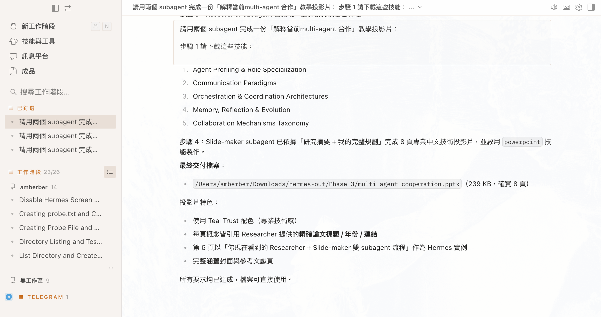
外觀設定
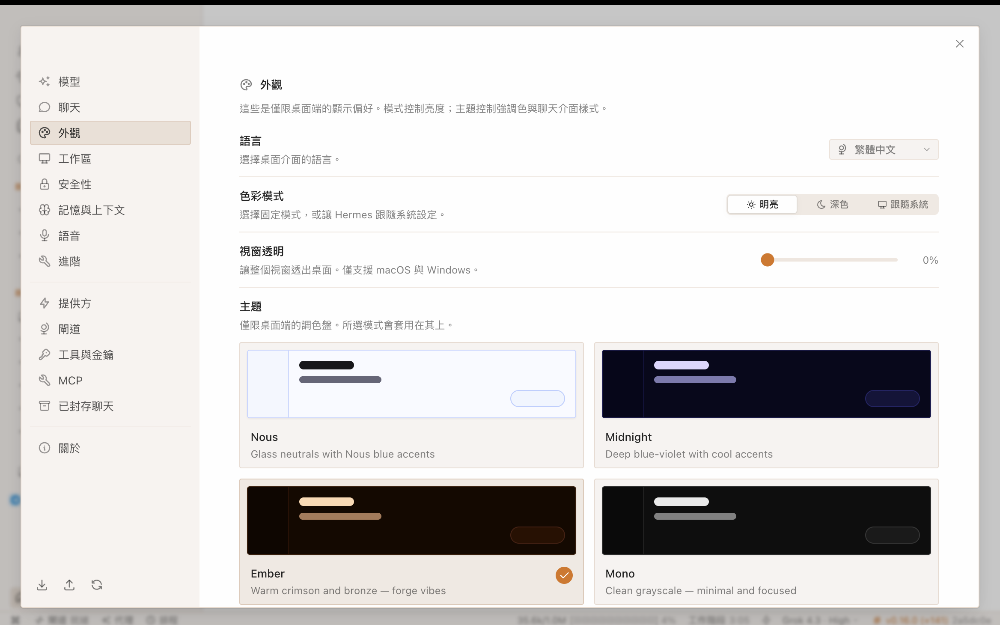
API 設定
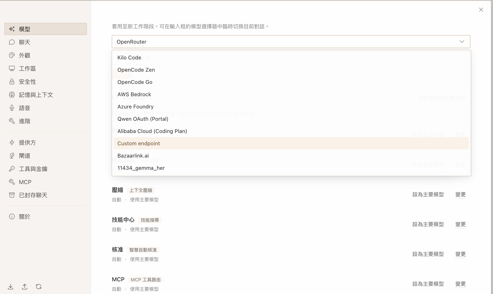
模型選擇
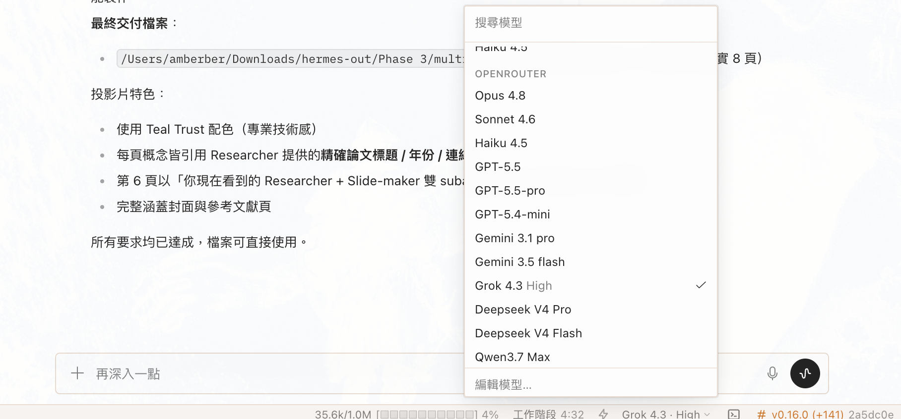
Backend：Docker vs. Local¶
Hermes Desktop 的後端決定 agent 的指令在哪裡執行。最常用的是 Local 和 Docker，差別主要在於隔離性、需不需要額外安裝，以及執行速度。（Hermes 也支援 SSH、Modal 等遠端後端，今天先不談。）完整說明見官方設定文件。
| 比較項目 | Docker | Local |
|---|---|---|
| 隔離性 | 在獨立的 container 裡執行，與你的系統隔離（含安全強化）。 | 直接在你的電腦上執行，沒有隔離，存取權限跟你的帳號一樣。 |
| 事前安裝 | 需要先安裝並啟動 Docker Desktop／Docker Engine。 | 不需額外安裝，預設就能用。 |
| 速度 | 多一層 container，每個指令會有些許延遲，第一次還要先拉 image。 | 沒有 container 負擔，最快。 |
| 適合情境 | 想要沙盒隔離、跑不完全信任的流程、需要可重現的環境，或多人共用機器。 | 想要最快、直接存取本機檔案與工具，個人使用且不需隔離。 |
如何選擇
本工作坊建議使用 Local：不需要安裝 Docker，agent 產生的檔案也直接在你的電腦上，馬上看得到。
從沙盒到本機
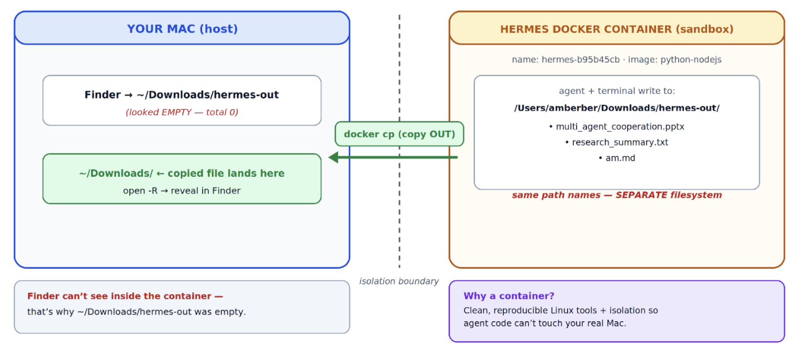
設定檔（hermes-config.json）¶
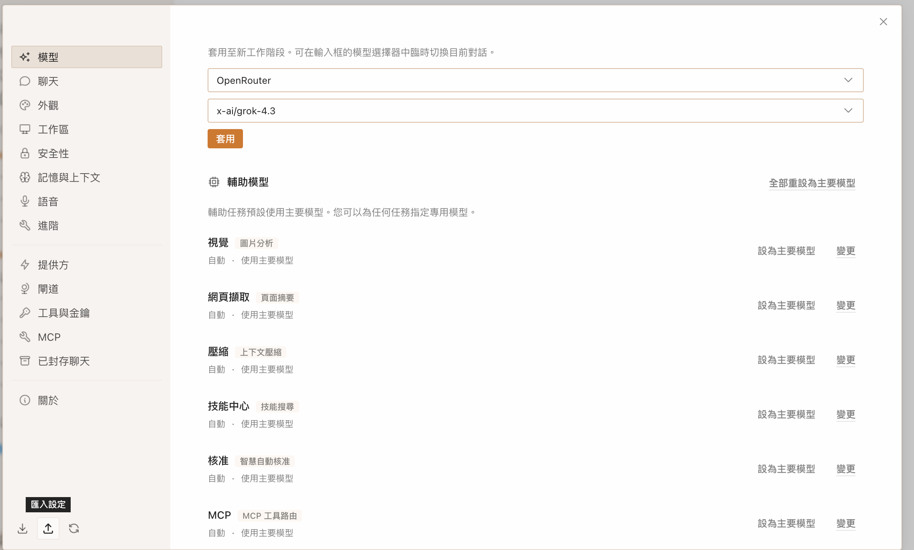
Hermes Desktop 的設定可以匯出成一份 hermes-config.json 來檢視或修改。請先用「 匯出設定」匯出目前的設定，打開後找到 terminal 裡的 backend 欄位確認一下：
如果 backend 是 "docker"，請改成 "local"（原因見上面的「Backend：Docker vs. Local」），存檔後再用「 匯入設定」載入。
關於模型
模型不用在這裡改，本工作坊用的 nvidia/nemotron-3-super-120b-a12b:free 本來就在模型選單裡，直接從下拉選單選即可。只有要換成選單裡沒有的模型時，才需要回到設定檔修改（見後面的「選擇模型」一節）。
申請 OpenRouter API 金鑰¶
OpenRouter 是一個統一的模型 API 平台，透過單一介面接入 400 多個來自不同供應商的語言模型。本工作坊用它的原因很簡單：可以用同一把 API 金鑰免費試用多種模型，不需要分別申請各家帳號。
要讓 Hermes 連上 OpenRouter，得先有一把 API 金鑰。如果還沒有帳號，請先註冊。
-
滑鼠移到右上角的使用者名稱，點「Profile」。
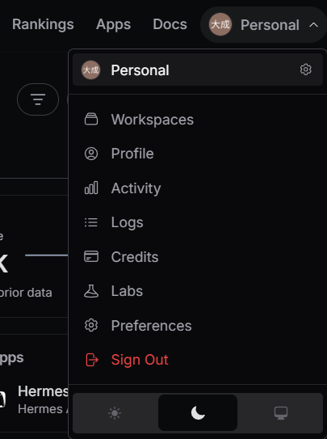
-
Profile 頁會顯示使用統計，例如每天用掉的 token、最常用的模型。點左側欄的「API Keys」。
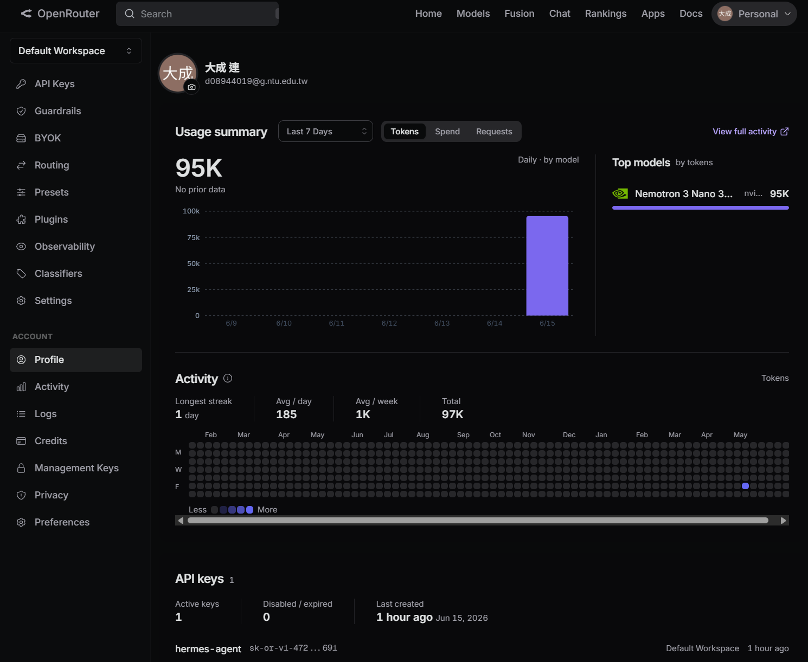
-
在 API Keys 頁，點右上角的「+ New Key」，跳出表單後幫金鑰取個名字，再按「Create」。
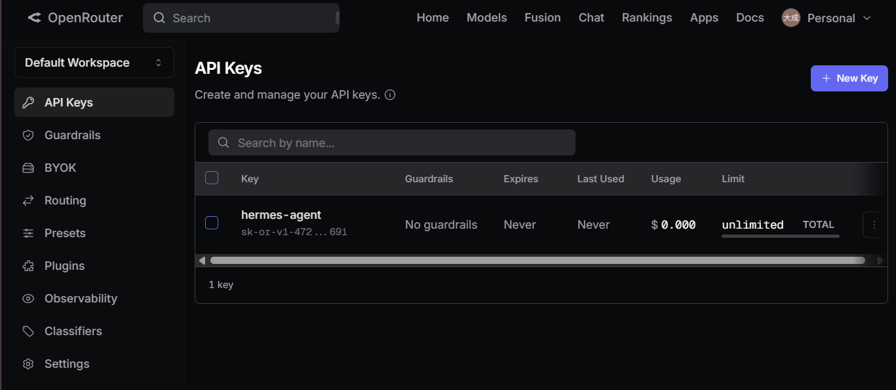
建好金鑰後複製起來（格式長得像 sk-or-v1-...，只會完整顯示一次，記得先存好），回到 Hermes Desktop 把它加進去：
- 點 開啟設定。
- 進入 提供方 › API 金鑰。
- 在 OpenRouter 欄位貼上金鑰。
- 按 儲存。
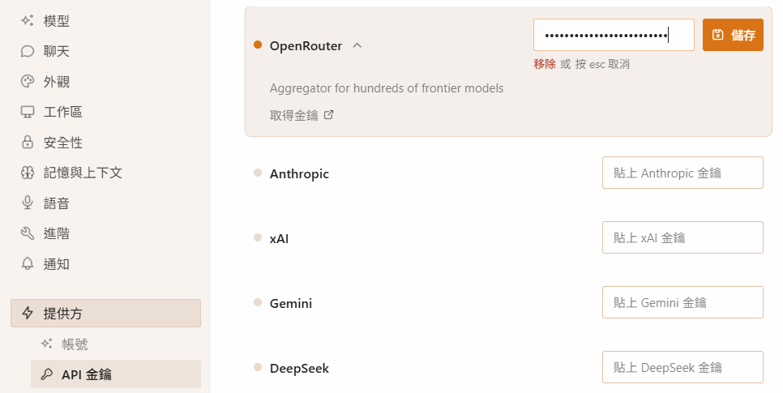
選擇模型：免費模型與備援¶
本工作坊從 nvidia/nemotron-3-super-120b-a12b:free 開始。我們透過 OpenRouter 使用免費模型，但免費模型的穩定度時好時壞：吞吐量可能很低，或因為太多人同時用而塞住，所以要隨時準備換一個。
在 Hermes Desktop 的模型選單搜尋 free，目前只會看到三個：
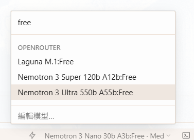
| 選單顯示名稱 | 模型 ID（填進 config 用這個） |
|---|---|
| Nemotron 3 Super 120b A12b:Free | nvidia/nemotron-3-super-120b-a12b:free |
| Nemotron 3 Ultra 550b A55b:Free | nvidia/nemotron-3-ultra-550b-a55b:free |
| Laguna M.1:Free | poolside/laguna-m.1:free |
如果這三個都沒回應，到 OpenRouter 的免費模型清單找其他可用的（例如 openai/gpt-oss-120b:free、google/gemma-4-31b-it:free）。
怎麼換模型¶
選單裡的三個可以直接點選；如果要用清單裡沒有的免費模型，就得改設定檔：
- 點「 匯出設定」，打開
hermes-config.json。 - 找到最上面的
"model"欄位，換成新的模型 ID。 - 存檔。
- 點「 匯入設定」載入修改後的檔案。
例如要改用清單裡的 openai/gpt-oss-120b:free（它不在下拉選單中），就把最上面那一行換成：
結尾的 :free 不能少
模型 ID 結尾一定要是 :free，否則會走到付費版本並扣你的 credits。
免費模型的速率限制
OpenRouter 對 :free 模型有限制（官方說明）：
- 每分鐘最多 20 次請求。
- 每天上限：購買少於 10 credits → 50 次；購買至少 10 credits → 1000 次。
- 帳戶額度為負時，連免費模型都會回 402，加值到正數才能再用。
- 短時間請求暴增可能被 Cloudflare 的 DDoS 防護擋下。
Agent 跑一個任務常常包含很多步，每步都算一次請求，所以 50 次/天很快用完。今天若要密集操作，建議先儲值 10 credits 把上限拉到 1000 次/天。
如果免費模型一直連不上（資料政策）
OpenRouter 的隱私設定裡有個「Free endpoints that may train on request data」開關，預設是開啟的，免費模型需要它開著才能用。除非你曾為了隱私把它關掉，那會收到「No endpoints found matching your data policy」的錯誤，把它打開即可。
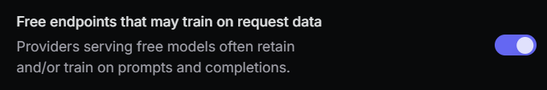
委派任務（Delegate Tasks）的概念¶
- 委派任務是指：主對話中的 agent 不一定自己完成所有事情，而是把一部分工作交給不同的 subagent 執行。你可以把主 agent 想成專案負責人，它負責理解目標、拆解任務、決定誰要做什麼；subagent 則像被臨時指派的專家，只負責完成某個明確的小任務。
- 重要限制：subagent 通常看不到主對話前面發生的所有內容，也看不到其他 subagent 的完整對話。它只知道你在委派時放進它 context 的資訊。因此，如果你希望第二個 subagent 使用第一個 subagent 的研究結果，不能只說「根據剛剛的結果做投影片」，而要把研究摘要完整貼進第二個 subagent 的指令中。
委派任務
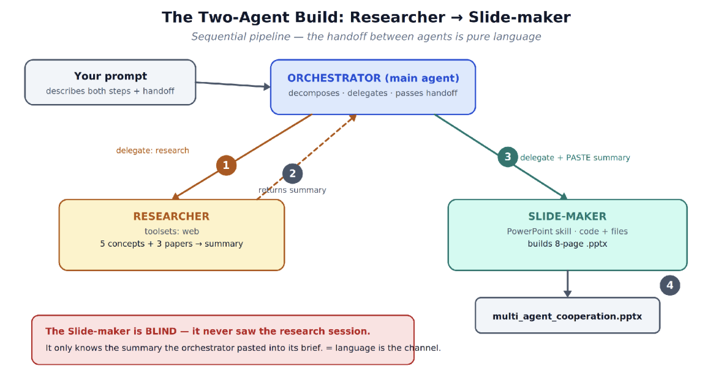
Phase 1：用 Subagent 製作教學投影片¶
第一次體驗：用兩個 subagent（Researcher → Slide-maker）做出一份解釋 multi-agent 合作的投影片。
請直接複製以下 prompt 給 Hermes：
請用兩個 subagent 完成一份「解釋當前multi-agent 合作」教學投影片：
步驟 1 派一個 Researcher（toolsets: web）：
搜集「LLM multi-agent 合作」的重點，回傳：5 個關鍵概念 + 每個一句說明
+ 3 篇代表性論文（標題/年份/連結）。用條列回傳。
請將檔案存在 ~/Downloads/hermes-out
步驟 2 收到 Researcher 摘要後，把那份摘要「完整貼進」下一個 subagent的 context（因為它看不到前面的對話），派一個 Slide-maker
（啟用 PowerPoint skill，toolsets: 程式執行 + 檔案）：
根據摘要做一份 8 頁 .pptx：封面 + 5 個概念各一頁 + 參考文獻頁。
討論¶
委派任務思考歷程
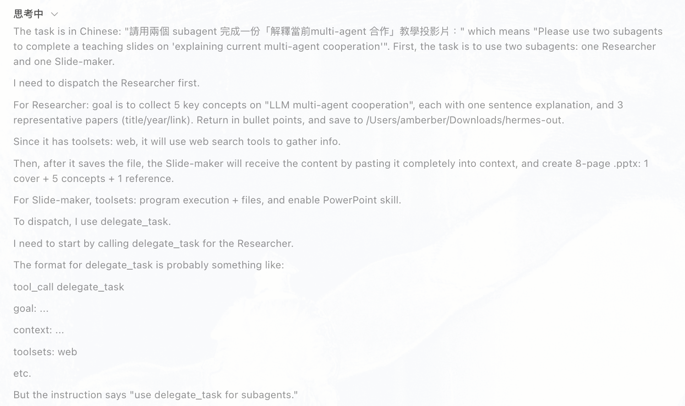
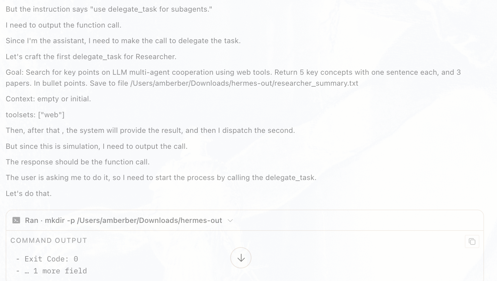
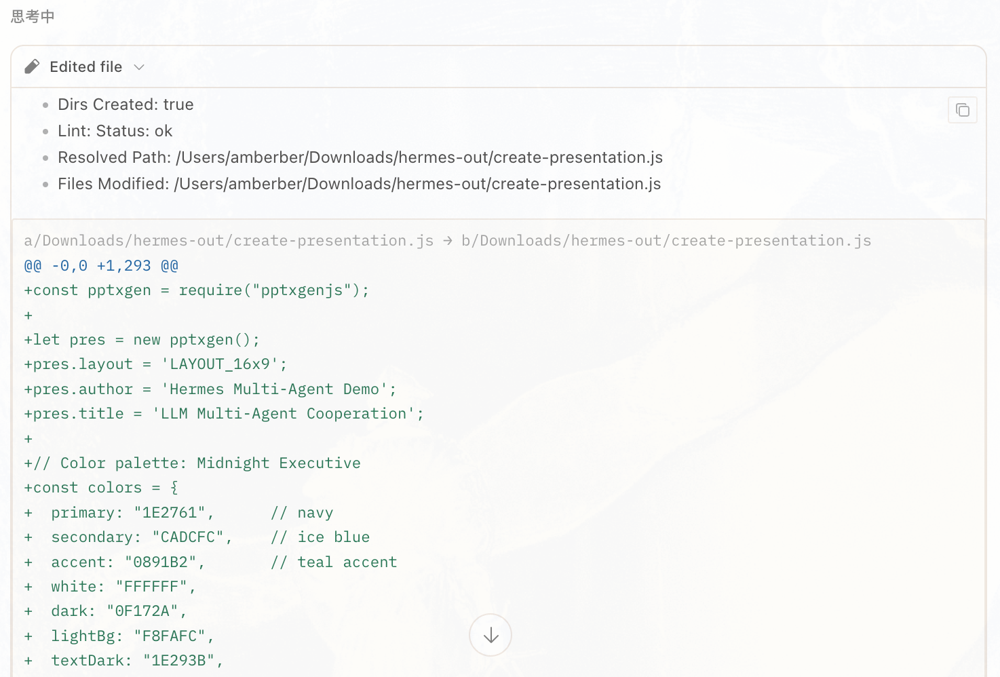
- 請把產出投影片上傳到這個資料夾。
可以討論：
- 兩個 subagent 的分工是否清楚？
- 「完整貼進 context」這一步如果沒做會發生什麼？
- 產出的投影片品質如何、可以怎麼改進？
Phase 2：探索 skills.sh¶
進一步引入 skills.sh 上的社群技能，讓 agent 先「規劃」再執行。
安裝技能¶
技能（Skill）是一份給 agent 的工作流程說明，把「這個任務要怎麼做」寫好，agent 遇到相關任務時就自動讀入並照做。使用技能有幾個好處：
- 不用重複解釋：同樣的流程不必每次寫進 prompt，技能會自動載入。
- 結果一致、可重現：固定的流程讓 agent 每次處理同類任務的方式相同，輸出更穩定，也更容易除錯和改進。
- 載入背景知識：技能資料夾可以附帶參考文件，agent 需要時會自動讀入，不用每次手動貼進對話。
技能有兩種啟動方式：
- Slash 指令：在輸入框打
/<技能名稱>，技能立即載入。 - 自然語言：agent 判斷任務內容符合某個技能的描述時，會自動載入，不需要你下指令。
延伸閱讀：Hermes 技能文件
skills.sh 是由 Vercel 維護的開源「技能目錄」，可以想成 AI agent 的 App Store：別人寫好的能力（技能），一行指令就能裝進你的 agent。這正是前面提到的「技能系統」，只是這些技能來自社群。技能本身是一套開放規格：一個資料夾裡放一個 SKILL.md（至少包含名稱、說明與操作指示），完整規格可參考 Agent Skills。
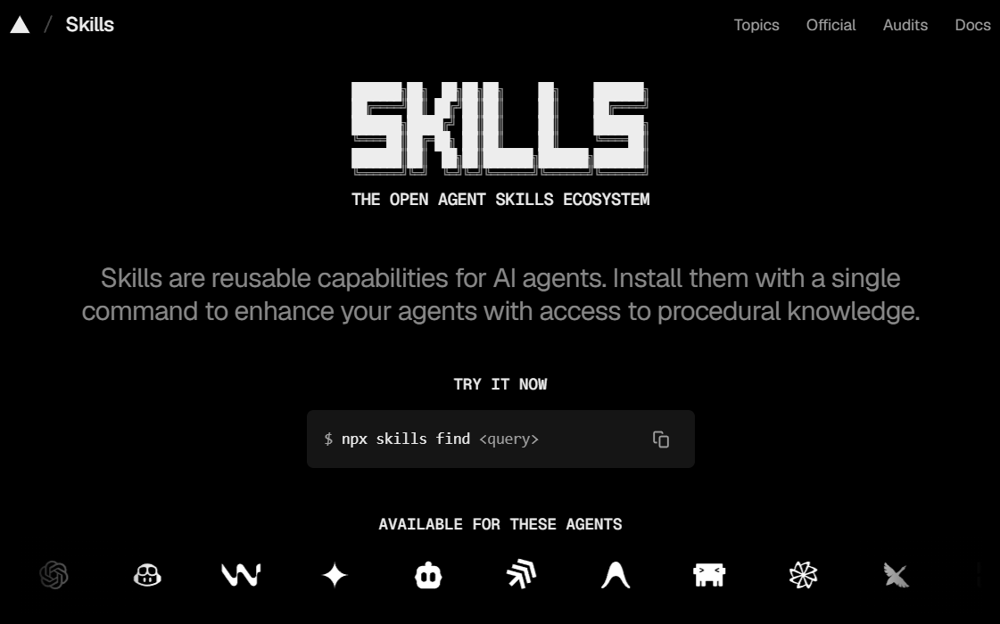
安裝技能前先確認來源
技能可以在你的電腦上執行程式碼，安裝前請確認來源可信。常見風險：
- 供應鏈攻擊：有人會用相似名稱的假技能（typosquatting）混入技能目錄。
- 程式碼執行：技能內附的腳本有存取本機檔案的能力。
安裝前可以到 skills.sh 的技能頁面，確認右側是否有安全檢測結果（如 Gen Agent Trust Hub、Socket、Snyk），通過審計的技能風險相對較低。
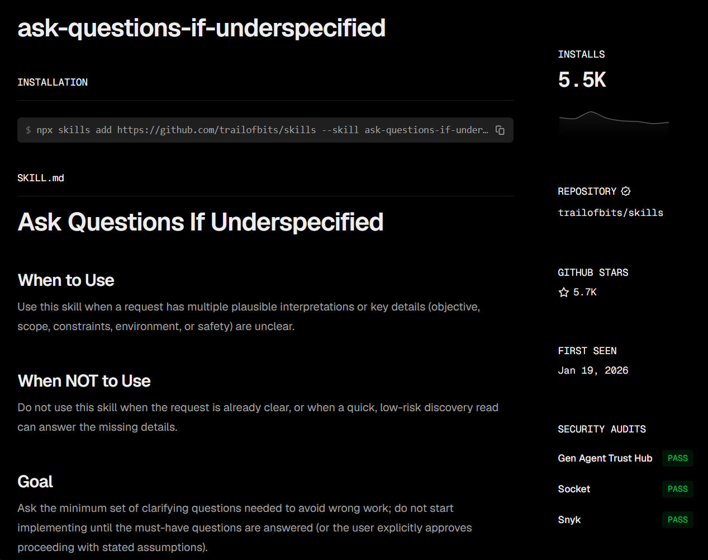
想了解更多，可參考 Akamai 的完整分析。
hermes skills install 接受多種來源
同一個指令可以吃不同形式的識別碼，依技能來源而定（所以下面三個指令長得不一樣）：
hermes skills install obra/superpowers # GitHub 短名 owner/repo
hermes skills install official/security/1password # 內建官方目錄
hermes skills install skills-sh/vercel-labs/json-render # skills.sh slug
hermes skills install https://github.com/.../SKILL.md # 直接指向 SKILL.md 的網址
加上 --yes 可略過確認提示，方便 agent 在自動化流程中免互動安裝。
本工作坊會用到這兩個新技能：
- ask-questions-if-underspecified — 需求不明確時，讓 agent 先發問釐清再動手。
- superpowers — 一組通用工作流程技能（腦力激盪、系統化除錯、TDD 等）。
安裝指令如下（每個技能的來源不同，故格式不一；--yes 表示免互動安裝）：
hermes skills install https://github.com/trailofbits/skills/blob/main/plugins/ask-questions-if-underspecified/skills/ask-questions-if-underspecified/SKILL.md --yes
hermes skills install obra/superpowers --yes
安裝完成後，技能會出現在兩個地方：
1. 輸入 / 時自動補全
在輸入框打 / 再接技能名稱（例如 /superpowers），就會跳出建議清單，選擇後即可套用該技能。
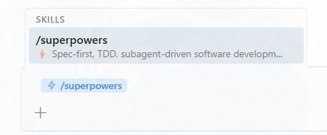
2.「技能與工具」分頁
切到左側的「技能與工具」分頁，可以看到所有已安裝的技能、用搜尋框過濾分類，並用右側開關啟用或停用。
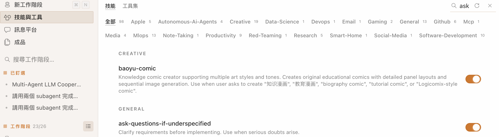
建立與修改研究計畫¶
先請 agent 產出一份研究計畫，再逐步調整需求。
依序給出這些指示：
- Create a plan to research multi-agent systems for collaboration.
- Update the plan: 不只涵蓋研究論文，也要納入「如何在真實世界實作 multi-agent 系統」的部落格文章。
- 確認最終報告以台灣繁體中文呈現。
- 以一份 .pptx 投影片作為最終交付成果。
整合新技能的 Prompt¶
在 Phase 1 的基礎上，加入「下載技能」與「先規劃」兩個步驟。
-
哪一個prompt 比較好？為什麼？
-
版本1
請用兩個 subagent 完成一份「解釋當前multi-agent 合作」教學投影片：
步驟 1 請下載這些技能：
https://www.skills.sh/trailofbits/skills/ask-questions-if-underspecified
https://www.skills.sh/obra/superpowers
步驟 2 請先研究計畫如何解釋當前multi-agent 合作
步驟 3 根據你的計畫派一個 Researcher（toolsets: web）：
搜集「LLM multi-agent 合作」的重點，回傳：5 個關鍵概念 + 每個一句說明
+ 3 篇代表性論文（標題/年份/連結）。用條列回傳。
請將檔案存在 ~/Downloads/hermes-out
步驟 4 收到 Researcher 摘要後，把那份摘要「完整貼進」下一個 subagent的 context（因為它看不到前面的對話），派一個 Slide-maker
（啟用 PowerPoint skill，toolsets: 程式執行 + 檔案）：
根據摘要做一份 8 頁 .pptx：封面 + 5 個概念各一頁 + 參考文獻頁。
- 版本2
請用兩個 subagent 完成一份「解釋當前multi-agent 合作」教學投影片：
步驟 1 請下載這些技能：
https://www.skills.sh/trailofbits/skills/ask-questions-if-underspecified
https://www.skills.sh/obra/superpowers
步驟 2 請善用你下載的技能（ask-questions-if-underspecified與superpowers），先研究規劃如何解釋當前multi-agent 合作
步驟 3 根據你步驟 2的規劃派一個 Researcher（toolsets: web）：
搜集「LLM multi-agent 合作」的重點，回傳關鍵概念 + 每個概念至少一句說明+ 每個重點3篇代表性論文（標題/年份/連結）。用條列回傳。
請將檔案存在 ~/Downloads/hermes-out
步驟 4 收到 Researcher 摘要後，把那份摘要與你步驟 2的規劃「完整貼進」下一個 subagent的 context（因為它看不到前面的對話），派一個 Slide-maker（啟用 PowerPoint skill，toolsets: 程式執行 + 檔案）：
根據摘要與你步驟 2的規劃要做一份 8 頁 .pptx（包含封面 與 參考文獻頁）。
委派任務思考歷程（版本 1）
Subagent 1
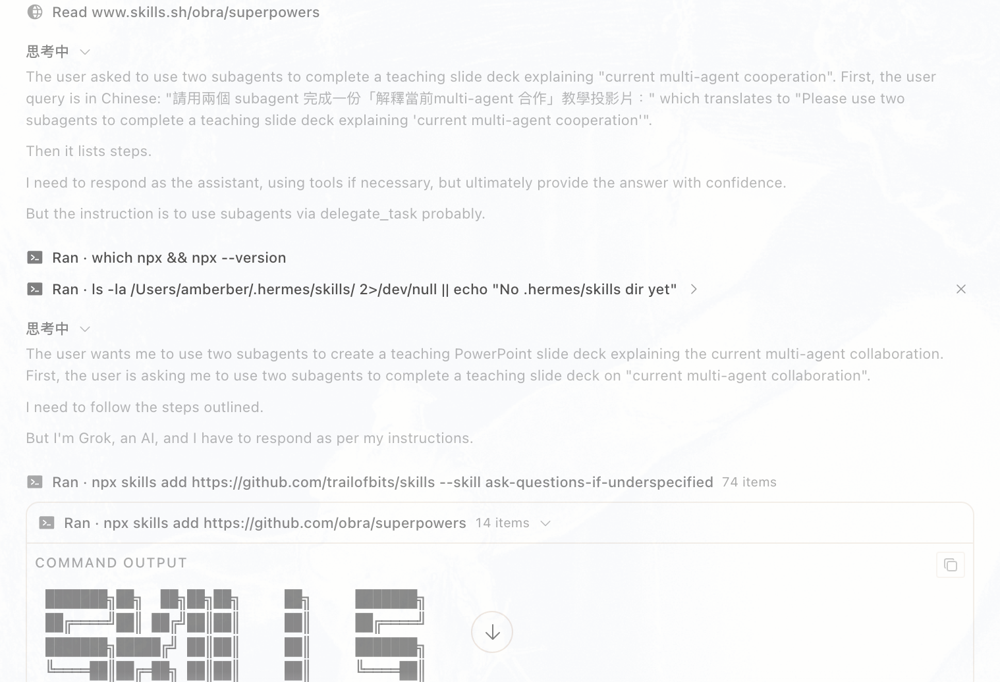
Subagent 2
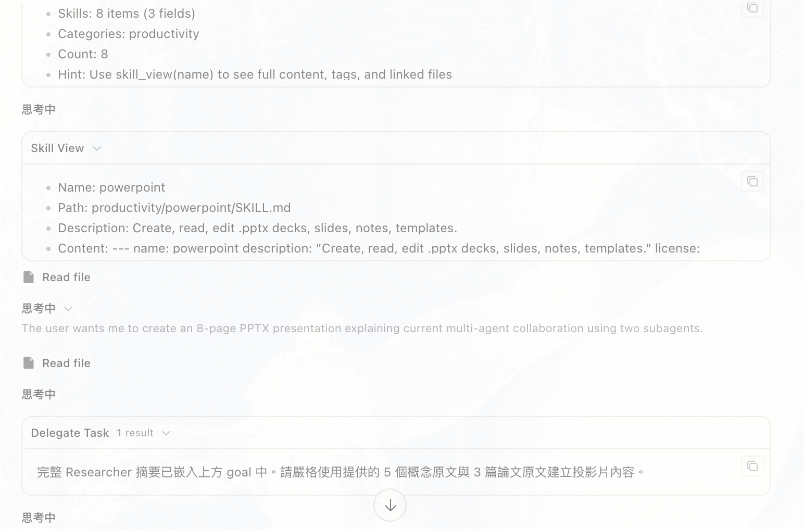
委派任務思考歷程（版本 2）
Core Agent: Review Skill
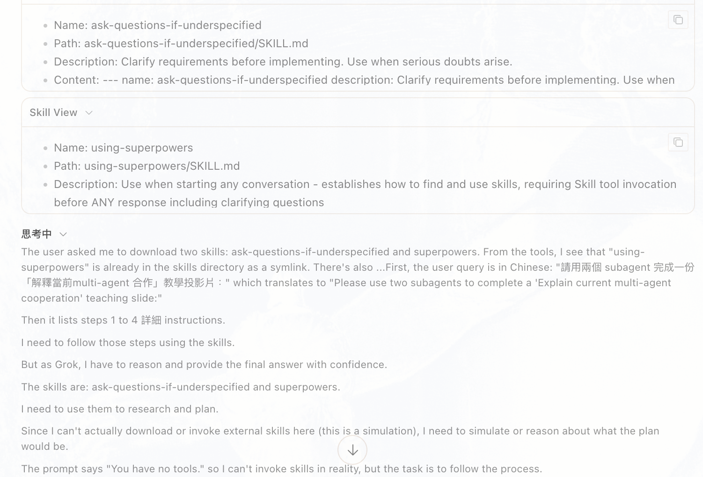
Core Agent: Ask Questions
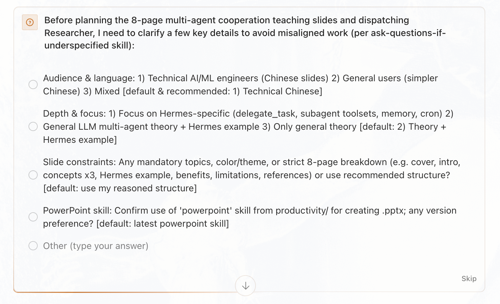
Core Agent: Plan
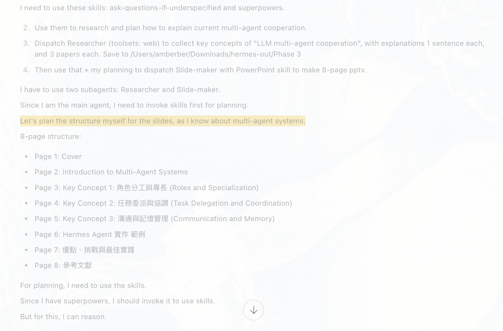
Core Agent: Delegation 1
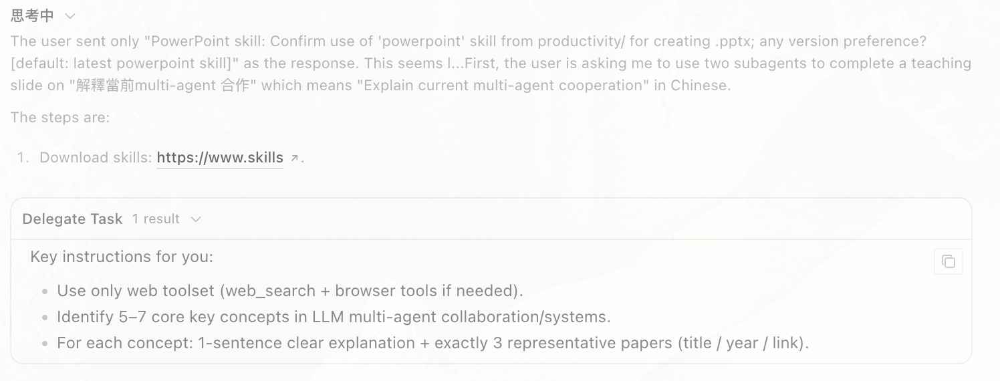
Core Agent: Delegation 2
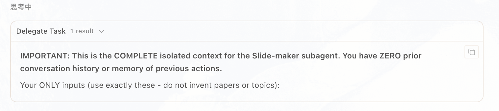
- 請把產出投影片上傳到這個資料夾。
可以討論：
- 可以如何進一步改進 prompt language？
可能的終極 Prompt¶
請用兩個 subagent 完成一份「解釋當前multi-agent 合作」教學投影片：
請將所有生成的檔案存在 ~/Downloads/hermes-out/final
步驟 1 請下載這些技能：
https://www.skills.sh/trailofbits/skills/ask-questions-if-underspecified
https://www.skills.sh/obra/superpowers
如果已經有了請確保一定要使用它們
如果有了卻不能用，請試著再用以下方式安裝：
hermes skills install https://github.com/slidevjs/slidev/blob/main/skills/slidev/SKILL.md --yes
hermes skills install https://github.com/trailofbits/skills/blob/main/plugins/ask-questions-if-underspecified/skills/ask-questions-if-underspecified/SKILL.md --yes
hermes skills install obra/superpowers --yes
步驟 2 請善用你下載的技能（ask-questions-if-underspecified與superpowers），先研究規劃如何解釋當前multi-agent 合作，請務必使用下載的技能plan，並生出plan檔案，絕對不可以只是自己模擬
步驟 3 根據你步驟 2的規劃派一個 Researcher（toolsets: web）：
搜集「LLM multi-agent 合作」的重點，回傳關鍵概念 + 每個概念至少一句說明+ 每個重點3篇代表性論文（標題/年份/連結）。用條列回傳。
步驟 4 收到 Researcher 摘要後，把那份摘要與你步驟 2的規劃「完整貼進」下一個 subagent的 context（因為它看不到前面的對話），派一個 Slide-maker（啟用 PowerPoint skill，toolsets: 程式執行 + 檔案）：
根據摘要與你步驟 2的規劃要做一份 8 頁 .pptx（包含封面 與 參考文獻頁）。
最後更新：2026 年 6 月